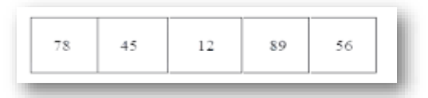

Two important data structures of pandas are–Series, DataFrame
Series is like a one-dimensional array like structure with homogeneous data. For example, the following series is a collection of integers
It is like one-dimensional array capable of holding data of any type (integer, string, float, python objects, etc.). Series can be created using constructor. Syntax :- pandas.Series( data, index, dtype, copy) Creation of Series is also possible from – ndarray, dictionary, scalar value. Series can be created using
import pandas as pd a=pd.Series() print(a)
Series([], dtype: float64)
try yourself
SERIES WITHOUT INDEX
import pandas as pd1 import numpy as np1 data = np1.array(['a','b','c','d']) s = pd1.Series(data) print(s)
1 a
2 b
3 c
4 d
dtype: object
Note : default index is starting
from 0
try yourself
import pandas as p1 import numpy as np1 data = np1.array(['a','b','c','d']) s = p1.Series(data,index=[100,101,102,103]) print(s)
100 a
101 b
102 c
103 d dtype:
object
try yourself